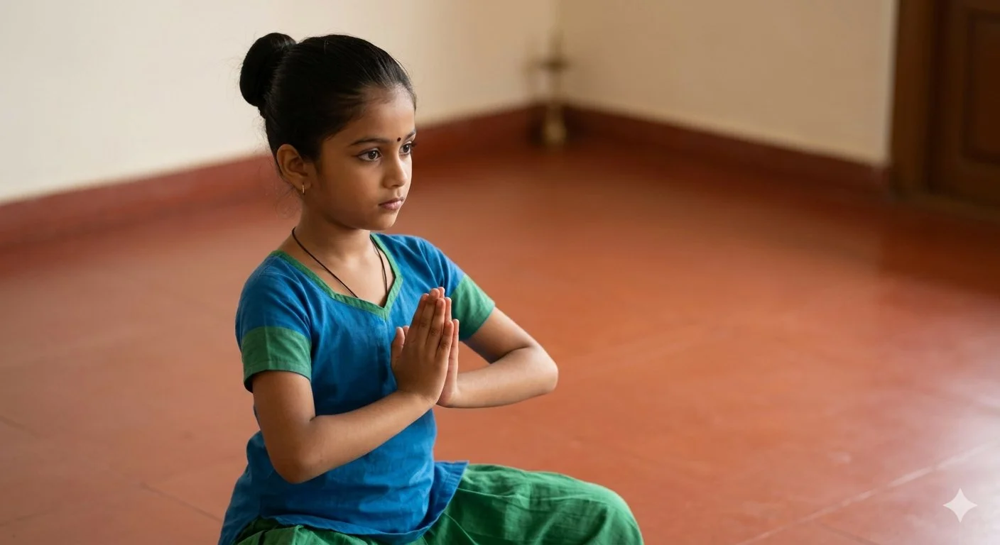
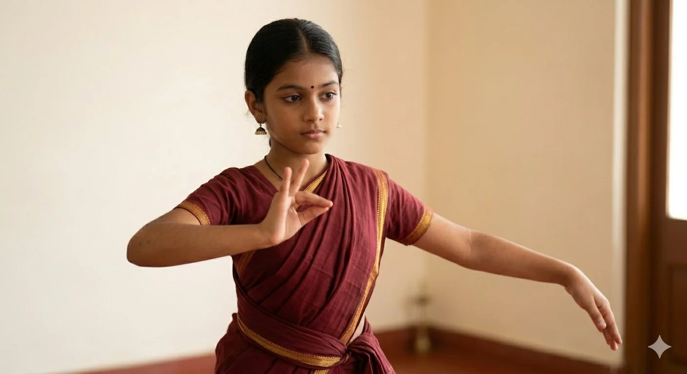
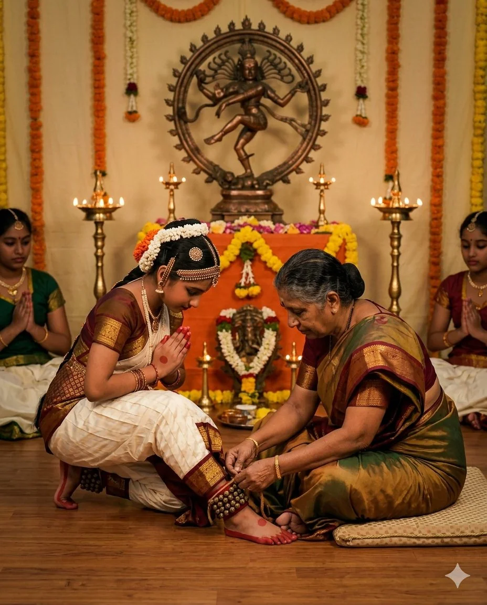
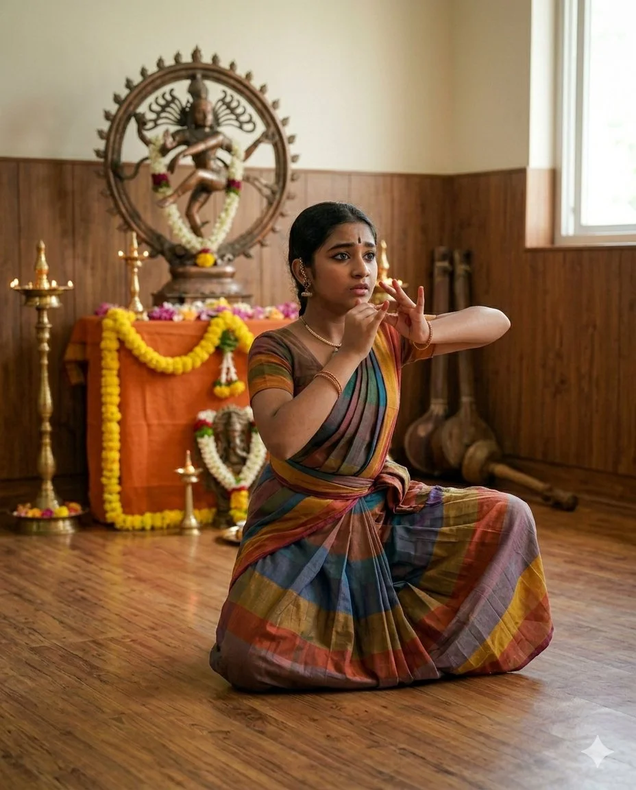
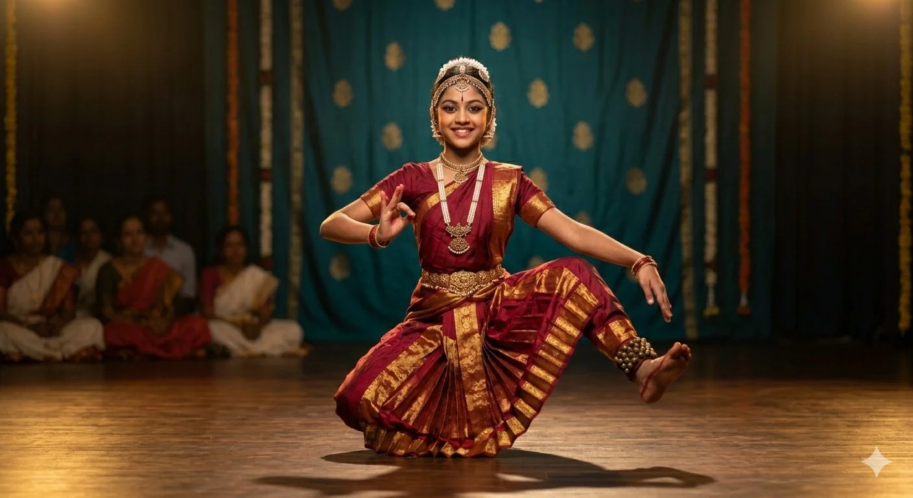
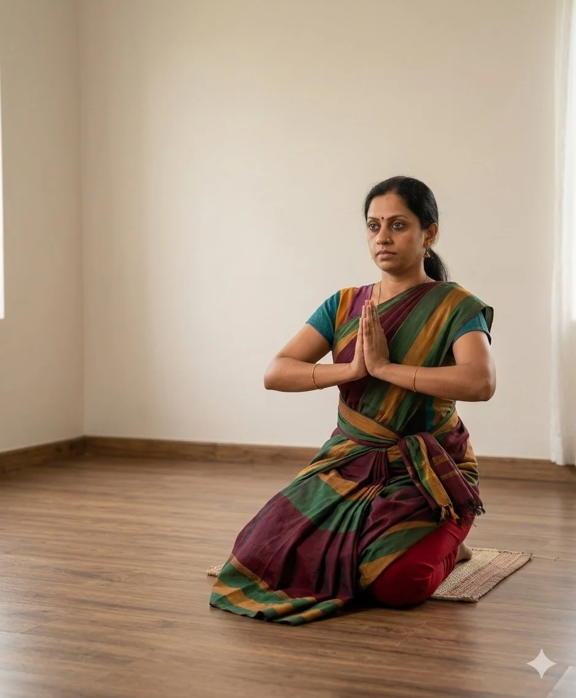

Bharatanatyam Courses
From a child's first adavu to the grandeur of Arangetram — a path for every student.
From first adavu to Arangetram
A structured path guided entirely by Guru Smt. Deepa Sadasivam

Beginners
Age 4+ · 1–2 years
Aramandi, adavus, mudras, Alarippu, Jatiswaram, rhythmic basics
Details ↓
Intermediate
2–5 yrs exp · 2–3 years
Complex adavus, Varnam, Padam, Javali, Thillana, full abhinaya
Details ↓
Salangai Pooja
After 1–2 years training
Sacred ceremony — ankle bells tied. First public stage debut
Details ↓
Advanced
5–10 yrs exp
Full margam, intensive abhinaya, concert-level training

Note: Progression is entirely at Guru's discretion. Adults are assessed individually. The Salangai Pooja is an essential milestone before the Arangetram. Students are regularly sent for Grade Exams for external progress assessment. Learn about Grade Exams →
Beginners Bharatanatyam
The perfect introduction to classical Bharatanatyam. For children from age 4, this course builds essential foundations: posture, hand gestures, footwork, and an intuitive sense of rhythm.
Children learn through stories from mythology and simple exercises. The environment is joyful and encouraging.
Curriculum highlights
- Aramandi and body alignment
- Adavus (footwork sequences) — single and double
- Asamyukta hasta mudras (single-hand gestures)
- Basic nritta items: Alarippu, Jatiswaram
- Introduction to tala: Adi, Rupaka
- Participation in Salangai Pooja ceremony
Intermediate Bharatanatyam
Where Bharatanatyam truly opens up — from pure nritta to nritya (expressive storytelling). Students work on longer, more complex compositions and develop deep abhinaya.
Abhinaya — facial expression and emotional portrayal — is developed through padams and javalis from the Bhakti tradition.
Curriculum highlights
- Complex adavu combinations and speed variations
- Samyukta hasta mudras and Navarasas
- Varnam — centrepiece of the repertoire
- Padams and Javalis — abhinaya compositions
- Thillana — the rhythmic finale
- Stage performance participation
Salangai Pooja — The First Stage Debut
The Salangai Pooja is the sacred ceremony in which the salangai (ankle bells) are tied for the first time — a deeply symbolic act marking the student's initiation as a classical dancer.
It is a spiritual offering — to the Guru, to the art form, and to the divine. Kalpavruksha has guided over 20+ Salangai Poojas since 2014.
1–2 years of adavus, mudras, basic compositions
Teacher assesses readiness
Intensive repertoire preparation
Public performance & Guru's blessing
Continues towards the full solo debut
Arangetram Preparation
The Arangetram — "ascending the stage" — is a full-length solo performance of 2.5–3 hours, marking the student's transition to an independent artist. It is the pinnacle of a Bharatanatyam journey.
Kalpavruksha provides complete support — training, music, orchestra, costume, ceremonial protocols and rehearsals. We have guided 4+ Arangetrams.
Complete margam: Pushpanjali, Alarippu, Jatiswaram, Shabdam, Varnam, Padams, Thillana, Mangalam. Full orchestration guidance included.
Discuss Arangetram Plans →
Adult Beginners
Always wanted to learn Bharatanatyam? We welcome adult beginners of any age — many students started in their 30s, 40s, and 50s.
The adult course is conceptual, systematic, and in a warm non-judgmental atmosphere. The pace is suited to adult learners.
Improves posture, balance, and body awareness
A profound outlet for creativity and emotion
Strengthens legs, core, improves flexibility
Deep dive into Indian classical arts
Batch timings
All offline classes run in the evenings. Online sessions in the morning or afternoon (IST).
| Batch | Sessions | Time | Mode |
|---|---|---|---|
| Beginners (Age 4+) | 2 sessions/week | Evening | In-person |
| Intermediate | 2–3 sessions/week | Evening | In-person |
| Adult Beginners | 2 sessions/week | Evening | In-person |
| Online — All levels | 2 sessions/week | Morning / Afternoon (IST) | Online |
Students are regularly sent for Grade Exams — external structured assessments providing an independent progress benchmark at each stage. Learn about Grade Exams →
Salangai Pooja and Arangetram preparation are planned individually — not part of regular batch schedule.
for classical dance progress
Grade Examinations
At Kalpavruksha, we regularly prepare and send students for Grade Examinations — an external, structured assessment programme that evaluates a student's progress in classical dance at each stage.
Grade Exams provide an independent, standardised benchmark — so students and parents have a clear, objective picture of where the student stands in their learning journey. This is over and above the regular in-class assessment by Guru Deepa.
Why Grade Exams matter
- ›Objective external assessment beyond teacher evaluation
- ›Nationally recognised graded certification for each level
- ›Motivates students with measurable milestones
- ›Kalpavruksha prepares students specifically for each grade level
Your first class is free
No commitment, no fees. Experience Bharatanatyam under Guru Deepa's guidance.
Book Free Trial →Or WhatsApp: +91 72000 95585